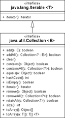
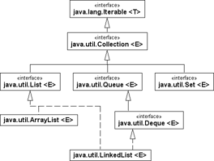

13 Einführung in Datenstrukturen und Algorithmen
Glück ist ganz einfach gute Gesundheit und ein schlechtes Gedächtnis.
– Ernest Hemingway (1899–1961)
Algorithmen[188](Das Wort Algorithmus geht auf den Namen des persisch-arabischen Mathematikers Ibn Mûsâ Al-Chwârismî zurück, der im 9. Jahrhundert lebte.) sind ein zentrales Thema der Informatik. Ihre Erforschung und Untersuchung nimmt dort einen bedeutenden Platz ein. Algorithmen operieren nur dann effektiv mit Daten, wenn diese geeignet strukturiert sind. Schon das Beispiel Telefonbuch zeigt, wie wichtig die Ordnung der Daten nach einem Schema ist. Die Suche nach einer Telefonnummer bei gegebenem Namen gelingt schnell, während die Suche nach einem Namen bei bekannter Telefonnummer ein mühseliges Unterfangen darstellt. Datenstrukturen und Algorithmen sind also eng miteinander verbunden, und die Wahl der richtigen Datenstruktur entscheidet über effiziente Laufzeiten; beide erfüllen allein nie ihren Zweck. Leider ist die Wahl der »richtigen« Datenstruktur nicht so einfach, wie es sich anhört, und diverse schwierige Probleme in der Informatik sind wohl deswegen noch nicht gelöst, weil eine passende Datenorganisation bis jetzt nicht gefunden wurde.

13.1 Datenstrukturen und die Collection-API
Dynamische Datenstrukturen passen ihre Größe der Anzahl der Daten an, die sie aufnehmen. Schon in Java 1.0 brachte die Standard-Bibliothek fundamentale Datenstrukturen mit, aber erst mit Java 1.2 wurde mit der Collection-API der Umgang mit Datenstrukturen und Algorithmen auf eine gute Basis gestellt. In Java 5 gab es große Anpassungen durch Einführung der Generics.
13.1.1 Designprinzip mit Schnittstellen, abstrakten und konkreten Klassen
Das Design der Collection-Klassen folgt vier Prinzipien:
- Schnittstellen legen Gruppen von Operationen für die verschiedenen Behältertypen fest. So gibt es zum Beispiel mit List eine Schnittstelle für Sequenzen (Listen) und mit Map eine Schnittstelle für Assoziativspeicher, die Schlüssel-Werte-Paare verbinden.
- Abstrakte Basisklassen führen die Operationen der Schnittstellen auf eine minimale Zahl von als abstrakt deklarierten Grundoperationen zurück. So greift etwa addAll() auf mehrere add()-Aufrufe zurück oder isEmpty() auf getSize(). (Mit den abstrakten Basisimplementierungen wollen wir uns nicht weiter beschäftigen. Sie sind interessanter, wenn eigene Datenstrukturen auf der Basis der Grundimplementierung entworfen werden.)
- Konkrete Klassen für bestimmte Behältertypen beerben die entsprechende abstrakte Basisklasse und ergänzen die unbedingt erforderlichen Grundoperationen (und ergänzen einige die Performance steigernde Methoden gegenüber der allgemeinen Lösung in der Oberklasse). Sie sind in der Nutzung unsere direkten Ansprechpartner. Für eine Liste können wir zum Beispiel die konkrete Klasse ArrayList und als Assoziativspeicher die Klasse TreeMap nutzen.
- Algorithmen, wie die Suche nach einem Element, gehören zum Teil zur Schnittstelle der Datenstrukturen. Zusätzlich gibt es mit der Klasse Collections eine Utility-Klasse mit weiteren Algorithmen.
13.1.2 Die Basis-Schnittstellen Collection und Map
Alle Datenstrukturen aus der Collection-API fußen entweder auf der Schnittstelle java.util.Collection (für Listen, Mengen, Schlangen) oder auf java.util.Map (für Assoziativspeicher). Durch die gemeinsame Schnittstelle erhalten alle implementierenden Klassen einen gemeinsamen Rahmen. Die Operationen lassen sich grob einteilen in:
- Basisoperationen zum Erfragen der Elementanzahl und zum Hinzufügen, Löschen, Selektieren und Finden von Elementen
- Mengenoperationen, um etwa andere Sammlungen einzufügen
- Feldoperationen bei Collection, um die Sammlung in ein Array zu konvertieren, und bei Map in Operationen, um alternative Ansichten von Schlüsseln oder Werten zu bekommen.
13.1.3 Die Utility-Klassen Collections und Arrays
Datenstrukturen implementieren Algorithmen, etwa die Verwaltung von Elementen in einem Binärbaum oder einem Array. Java bietet zudem zwei besondere Klassen für insbesondere Such- und Sortier-Algorithmen: die Utility-Klasse Collections bietet Hilfsmethoden für Collection-Objekte – und einige wenige Methoden für Mengen –, und Arrays bietet statische Hilfsmethoden für Felder. Wichtig ist, auf die Schreibweise zu achten: Collection vs. Collections. Die Namensgebung ist jedoch einheitlich, denn in der gesamten Java API gibt es mehrere Beispiele für Utility-Klassen, die ein »s« am Ende bekommen und ausschließlich statische Methoden bereitstellen.
13.1.4 Das erste Programm mit Container-Klassen
Bis auf Assoziativspeicher implementieren alle Container-Klassen das Interface Collection und haben dadurch schon wichtige Methoden, um Daten aufzunehmen, zu manipulieren und auszulesen. Das folgende Programm erzeugt als Datenstruktur eine verkettete Liste, fügt Strings ein und gibt zum Schluss die Sammlung auf der Standardausgabe aus:
Listing 13.1: com/tutego/insel/util/MyFirstCollection.java, MyFirstCollection
public class MyFirstCollection
{
private static void fill( Collection<String> c )
{
c.add( "Juvy" );
c.add( "Tina" );
c.add( "Joy" );
}
public static void main( String[] args )
{
List<String> c = new LinkedList<String>();
fill( c );
System.out.println( c ); // [Juvy, Tina, Joy]
Collections.sort( c );
System.out.println( c ); // [Joy, Juvy, Tina]
}
}
Das Beispiel zeigt unterschiedliche Aspekte der Collection-API:
- Seit Java 5 sind alle Datenstrukturen generisch deklariert. Statt new LinkedList() schreiben wir new LinkedList<String>().
- Unserer eigenen statischen Methode fill() ist es egal, welche Collection wir ihr geben. Sie arbeitet nicht nur auf der LinkedList, sondern genauso auf einer ArrayList und auf Mengen (Set-Objekte), denn Set-Klassen implementieren ebenfalls Collection.
- Eine Liste lässt sich mit add() füllen. Die Methode schreibt die Schnittstelle Collection vor, und LinkedList realisiert die Operation aus der Schnittstelle.
- Während Collection eine Schnittstelle ist, die von unterschiedlichen Datenstrukturen implementiert wird, ist Collections eine Utililty-Klasse mit vielen Hilfsmethoden, etwa zum Sortieren mit Collections.sort().
| Tipp |
|
Nutze immer den kleinstnötigen Typ! Wir haben das an zwei Stellen getan. Statt fill(LinkedList<String> c) deklariert das Programm fill(Collection<String> c), und statt LinkedList<String> c = new LinkedList<String>() nutzt es List<String> c = new LinkedList<String>(). Mit dieser Schreibweise lassen sich unter softwaretechnischen Gesichtspunkten leicht die konkreten Datenstrukturen ändern, aber etwa die Methodensignatur ändert sich nicht und ist breiter aufgestellt. Es ist immer schön, wenn wir – etwa aus Gründen der Geschwindigkeit oder Speicherplatzbeschränkung – auf diese Weise leicht die Datenstruktur ändern können und der Rest des Programms unverändert bleibt. Das ist die Idee der schnittstellenorientierten Programmierung, und es ist in Java selten nötig, den konkreten Typ einer Klasse direkt anzugeben. |
13.1.5 Die Schnittstelle Collection und Kernkonzepte
Unterschnittstellen erweitern Collection und schreiben Verhalten vor, ob etwa der Container die Reihenfolge des Einfügens beachtet, Werte doppelt beinhalten darf oder die Werte sortiert hält; List, Set, Queue, Deque und NavigableSet sind dabei die wichtigsten.
Abbildung 13.1: UML-Diagramm der Schnittstelle Collection
Es folgt eine Übersicht über alle Methoden:
interface java.util.Collection<E> |
- boolean add(E o)
Optional. Fügt dem Container ein Element hinzu und gibt true zurück, falls sich das Element einfügen lässt. Gibt false zurück, wenn schon ein Objekt gleichen Werts vorhanden ist und doppelte Werte nicht erlaubt sind. Diese Semantik gilt etwa bei Mengen. Erlaubt der Container das Hinzufügen grundsätzlich nicht, löst er eine UnsupportedOperationException aus. - boolean addAll(Collection<? extends E> c)
Fügt alle Elemente der Collection c dem Container hinzu. - void clear()
Optional. Löscht alle Elemente im Container. Wird dies vom Container nicht unterstützt, wird eine UnsupportedOperationException ausgelöst. - boolean contains(Object o)
Liefert true, falls der Container ein inhaltlich gleiches Element enthält. - boolean containsAll(Collection<?> c)
Liefert true, falls der Container alle Elemente der Collection c enthält. - boolean isEmpty()
Liefert true, falls der Container keine Elemente enthält. - Iterator<E> iterator()
Liefert ein Iterator-Objekt über alle Elemente des Containers. - boolean remove(Object o)
Optional. Entfernt das angegebene Objekt aus dem Container, falls es vorhanden ist. - boolean removeAll(Collection<?> c)
Optional. Entfernt alle Objekte der Collection c aus dem Container. - boolean retainAll(Collection<?> c)
Optional. Entfernt alle Objekte, die nicht in der Collection c vorkommen. - int size()
Gibt die Anzahl der Elemente im Container zurück. - Object[] toArray()
Gibt ein Array mit allen Elementen des Containers zurück. - <T> T[] toArray(T[] a)
Gibt ein Array mit allen Elementen des Containers zurück. Verwendet das als Argument übergebene Array als Zielcontainer, wenn es groß genug ist. Sonst wird ein Array passender Größe angelegt, dessen Laufzeittyp a entspricht. - boolean equals(Object o)
Prüft, a) ob das angegebene Objekt o ein kompatibler Container ist, und b), ob alle Elemente aus dem eigenen Container equals()-gleich der Elemente des anderen Containers sind, und c) ob sie – falls vorhanden – die gleiche Ordnung haben. - int hashCode()
Liefert den Hash-Wert des Containers. Dies ist wichtig, wenn der Container als Schlüssel in Hash-Tabellen verwendet wird. Dann darf der Inhalt aber nicht mehr geändert werden, da der Hash-Wert von allen Elementen des Containers abhängt.
| Hinweis |
|
Der Basistyp Collection ist typisiert, genauso wie die Unterschnittstellen und implementierenden Klassen. Auffällig sind die Methoden remove(Object) und contains(Object), die gerade nicht mit dem generischen Typ E versehen sind, was zur Konsequenz hat, dass diese Methoden mit beliebigen Objekten aufgerufen werden können. Fehler schleichen sich schnell ein, wenn der Typ der eingefügten Objekte ein anderer ist als der beim Löschversuch, etwa bei HashSet<Long> set mit anschließendem set.add(1L) und remove(1). |
Anzeige der Veränderungen durch boolesche Rückgaben
Der Rückgabewert einiger Methoden wie add() oder remove() ist ein boolean und könnte natürlich auch void sein. Doch die Collection-API signalisiert über die Rückgabe, ob eine Änderung der Datenstruktur erfolgte oder nicht. Bei Mengen liefert add() etwa false, wenn ein gleiches Element schon in der Menge ist; add() ersetzt das alte nicht durch das neue.
Vergleiche im Allgemeinen auf Basis von equals()
Der Methode equals() kommt bei den Elementen, die in die Datenstrukturen wandern, eine besondere Rolle zu. Jedes Objekt, das eine ArrayList, LinkedList, HashSet und alle anderen Datenstrukturen[189](Lassen wir die besondere Klasse IdentityHashMap außen vor.) aufnehmen soll, muss zwingend equals() implementieren. Denn Methoden wie contains(), remove() vergleichen die Elemente mit equals() auf Gleichheit und nicht mit == auf Identität.
| Beispiel |
|
Ein neues Punkt-Objekt kommt in die Datenstruktur. Nun wird es mit einem anderen equals()-gleichen Objekt auf das Vorkommen in der Collection geprüft und gelöscht: Collection<Point> list = new ArrayList<Point>(); |
|
list.remove( new Point(47, 11) ); |
Eigene Klassen müssen folglich equals() aus der absoluten Oberklasse Object überschreiben. Umgekehrt heißt das auch, dass Objekte, die kein sinnvolles equals() besitzen, nicht von den Datenstrukturen aufgenommen werden können; ein Beispiel hierfür ist StringBuilder/StringBuffer.
13.1.6 Schnittstellen, die Collection erweitern und Map
Es gibt einige elementare Schnittstellen, die einen Container weiter untergliedern, etwa in der Art, wie Elemente gespeichert werden.
Abbildung 13.2: Zentrale Schnittstellen und Klassen der Collection-API
Die Schnittstelle List für Sequenzen
Die Schnittstelle List[190](Wie in der Collection-Design-FAQ unter http://java.sun.com/javase/6/docs/technotes/guides/collections/ designfaq.html#11 nachzulesen ist, hätte die Schnittstelle durchaus Sequence heißen können.), die die Collection-Schnittstelle erweitert, enthält zusätzliche Operationen für eine geordnete Liste (auch Sequenz genannt) von Elementen. Auf die Elemente einer Liste lässt sich über einen ganzzahligen Index zugreifen, und es kann linear nach Elementen gesucht werden. Doppelte Elemente sind erlaubt, auch beliebig viele null-Einträge.
Zwei bekannte implementierende Klassen sind LinkedList sowie ArrayList. Weil das AWT-Paket eine Klasse mit dem Namen List deklariert, muss bei der import-Deklaration darauf geachtet werden, das richtige java.util.List statt java.awt.List zu verwenden.
Die Schnittstelle Set für Mengen
Ein Set ist eine im mathematischen Sinne definierte Menge von Objekten. Wie von mathematischen Mengen bekannt, darf ein Set keine doppelten Elemente enthalten. Für zwei nicht identische Elemente e1 und e2 eines Set-Objekts liefert der Vergleich e1.equals(e2) also immer false. Genauer gesagt: Aus e1.equals(e2) folgt, dass e1 und e2 identische Objektreferenzen sind, sich also auf dasselbe Mengenelement beziehen.
Besondere Beachtung muss Objekten geschenkt werden, die ihren Wert nachträglich ändern, da so zunächst ungleiche Mengenelemente inhaltlich gleich werden können. Dies kann ein Set nicht kontrollieren. Als weitere Einschränkung gilt, dass eine Menge sich selbst nicht als Element enthalten darf. Die wichtigste konkrete Mengen-Klasse ist HashSet.
NavigableSet – beziehungsweise ihr Muttertyp SortedSet – erweitert Set um die Eigenschaft, Elemente sortiert auslesen zu können. Das Sortierkriterium wird durch ein Exemplar der Hilfsklasse Comparator bestimmt, oder die Elemente implementieren Comparable. Die Klassen TreeSet und ConcurrentSkipListSet implementieren die Schnittstellen und erlauben mit einem Iterator oder einer Feld-Repräsentation Zugriff auf die sortierten Elemente.
Die Schnittstelle Queue für (Warte-)Schlangen
Eine Queue arbeitet nach dem FIFO-Prinzip (First in, First out); zuerst eingefügte Elemente werden zuerst wieder ausgegeben, getreu nach dem Motto »Wer zuerst kommt, mahlt zuerst«. Die Schnittstelle Queue deklariert Operationen für alle Warteschlangen und wird etwa von den Klassen LinkedList und PriorityQueue implementiert.
Queue mit zwei Enden
Während die Queue Operationen bietet, um an einem Ende Daten anzuhängen und zu erfragen, bietet die Datenstruktur Deque (vom Englischen »double-ended queue«) Operationen an beiden Enden. Die Klasse LinkedList ist zum Beispiel eine Implementierung von Deque. Die Datenstruktur wird wie »Deck« ausgesprochen.
Die Schnittstelle Map
Eine Datenstruktur, die einen Schlüssel (engl. key) mit einem Wert (engl. value) verbindet, heißt assoziativer Speicher. Sie erinnert an ein Gedächtnis und ist mit einem Wörterbuch oder Nachschlagewerk vergleichbar. Betrachten wir ein Beispiel: Auf einem Personalausweis findet sich eine eindeutige Nummer, eine ID, die einmalig für jeden Bundesbürger ist. Wenn nun in einem Assoziativspeicher alle Passnummern gespeichert sind, lässt sich leicht über die Passnummer (Schlüssel) die Person (Wert) herausfinden, also der Name der Person, die Gültigkeit des Ausweises usw. In die gleiche Richtung geht ein Beispiel, das ISB-Nummern mit Büchern verbindet. Ein Assoziativspeicher könnte zu der ISB-Nummer zum Beispiel das Erscheinungsjahr assoziieren, ein anderer Assoziativspeicher eine Liste von Rezensionen.
| Hinweis |
|
Gerne wird als Beispiel für einen Assoziativspeicher ein Telefonbuch mit einer Assoziation zwischen Namen und Telefonnummern genannt. Wenn das mit einem Assoziativspeicher realisiert werden muss, reicht natürlich der Name alleine nicht aus, sondern der Ort/das Land müssen dazukommen (ich bin zum Beispiel nicht der einzige Christian Ullenboom; in Erlangen wohnt mein Namensvetter). Auch ist es weniger ein Problem, dass in einem Familienhaushalt mehrere Personen die gleiche Telefonnummer besitzen. Vielmehr wird die Tatsache zum Problem, dass eine Person unterschiedliche Telefonnummern, etwa eine Mobil- und Festnetznummer, besitzen kann. Damit das Modell korrekt bleibt, muss eine Assoziation zwischen einem Namen und einer Liste von Telefonnummern bestehen. Ein Assoziativspeicher ist flexibel genug dafür: Der assoziierte Wert muss kein einfacher Wert wie eine Zahl oder String sein, sondern kann eine komplexe Datenstruktur sein. |
In Java schreibt die Schnittstelle Map Verhalten für einen Assoziativspeicher vor. Map ist ein wenig anders als die anderen Schnittstellen. So erweitert die Schnittstelle Map die Schnittstelle Collection nicht. Das liegt daran, dass bei einem Assoziativspeicher Schlüssel und Wert immer zusammen vorkommen müssen und die Datenstruktur eine Operation wie add(Object) nicht unterstützen kann. Im Gegensatz zu List gibt es bei einer Map auch keine Position.
Die Schlüssel einer Map können mithilfe eines Kriteriums sortiert werden. Ist das der Fall, implementieren diese speziellen Klassen die Schnittstelle NavigableMap (beziehungsweise der Muttertyp SortedSet), die Map direkt erweitert. Das Sortierkriterium wird entweder über ein externes Comparator-Objekt festgelegt, oder die Elemente in der Map sind vom Typ Comparable. Damit kann ein Iterator in einer definierten Reihenfolge einen assoziativen Speicher ablaufen. Bisher implementieren TreeMap und ConcurrentSkipListMap die Schnittstelle NavigableMap.
13.1.7 Konkrete Container-Klassen
Alle bisher vorgestellten Schnittstellen und Klassen dienen zur Modellierung und dem Programmierer nur als Basistyp. Die folgenden Klassen sind konkrete Klassen und können von uns benutzt werden:
13.1.8 Generische Datentypen in der Collection-API
Seit Java 5 macht die Collection-API massiv Gebrauch von Generics. Das fällt unter anderem dadurch auf, dass die API-Dokumentation einen parametrisierten Typ erwähnt und die Collection-Schnittstelle zum Beispiel nicht add(Object e) deklariert, sondern add(E e). Generics gewährleisten bessere Typsicherheit, da nur spezielle Objekte in die Datenstruktur kommen. Mit den Generics lässt sich bei der Konstruktion einer Collection-Datenstruktur angeben, welche Typen zum Beispiel in der Datenstruktur-Liste erlaubt sind. Soll eine Spielerliste players nur Objekte vom Typ Player aufnehmen, so sieht die Deklaration so aus:
List<Player> players = new ArrayList<Player>();
Mit dieser Schreibweise lässt die Liste nur den Typ Player beim Hinzufügen und Anfragen zu, nicht aber andere Typen, wie etwa Zeichenketten. Das ist eine schöne Sicherheit für den Programmierer.
Geschachtelte Generics
Die Schreibweise List<String> deklariert eine Liste, die Strings enthält. Um eine verkettete Liste aufzubauen, deren Elemente wiederum Listen mit Strings sind, lassen sich die Deklarationen auch zusammenführen:[191](Das erinnert mich immer unangenehm an C: ein Feld von Pointern, die auf Strukturen zeigen, die Pointer enthalten.)
List<List<String>> las = new LinkedList<List<String>>();
13.1.9 Die Schnittstelle Iterable und das erweiterte for
Das erweiterte for erwartet rechts vom Doppelpunkt den Typ java.lang.Iterable, um durch eine Sammlung laufen zu können. Praktisch ist, dass alle java.util.Collection-Klassen die Schnittstelle Iterable implementieren, denn damit kann das erweiterte for leicht über diverse Sammlungen laufen.
| Beispiel |
|
Füge Zahlen in eine sortierte Menge ein, und gib sie aus. Collection<Integer> numbers = new TreeSet<Integer>(); |
Ist die Sammlung nicht typisiert, wird die lokale Variable vom erweiterten for nicht den Typ bekommen können, sondern nur Object. Dann muss eine explizite Typanpassung im Inneren der Schleife vorgenommen werden.
| Hinweis |
|
Ist die Datenstruktur null, so führt das zu einer NullPointerExcpetion: Collection<String> list = null; |
 NullPointerExcpetion zur Laufzeit
NullPointerExcpetion zur LaufzeitIhr Kommentar
Wie hat Ihnen das <openbook> gefallen? Wir freuen uns immer über Ihre freundlichen und kritischen Rückmeldungen.
 Jetzt bestellen
Jetzt bestellen


{kind=link}
{kind=link}